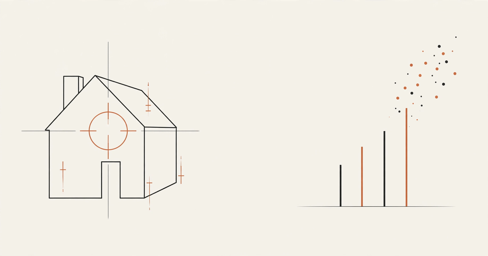

At a glance: Python, pandas, scikit-learn, LightGBM, XGBoost · 90,275 home sales × 58 property attributes (Los Angeles, Orange, Ventura counties, 2016) · target: logerror = log(Zestimate) − log(SalePrice) · median baseline vs. LightGBM vs. XGBoost · best: LightGBM MAE 0.06822.
The problem.
Most price-prediction projects ask "what is this home worth?" This one asks a sharper question: where does Zillow's own model go wrong, and by how much? For every home that sold, the dataset records the logerror — the gap between Zillow's Zestimate and the actual sale price, on a log scale. Positive means Zillow overvalued the home; negative means it undervalued it. If that error is predictable from a property's characteristics, Zillow could correct its Zestimate before publishing it.
The data.
Two files from Kaggle's Zillow Prize competition: train_2016 (90,275 sales with parcel id, logerror, and sale date) and properties_2016 (~58 attributes per property — bedrooms, bathrooms, square footage, year built, location, tax assessments, zoning). Joining every sale to its property record gave 90,275 complete rows. Twenty columns were missing in over 90% of rows — basement square footage, pool details, and the like — and were dropped, leaving 52 features.
Feature engineering.
Raw columns rarely speak for themselves, so I built signals the models could use: sale month and quarter (Zestimate accuracy drifts through the year), property age (2016 minus year built), ratios like living square feet per bedroom, property tax per square foot, and lot-to-living-area ratio, plus log transforms of skewed money and size fields. Categorical fields — zoning description, land-use code, county — went in as native LightGBM categoricals.
The models.
An 80/20 train/validation split, same for every model, judged on MAE — the competition's own metric, the average size of the mistake.
Median baseline (predict 0.006 for every home): MAE 0.06835. LightGBM (64 leaves, early stopping): MAE 0.06822, RMSE 0.16070. XGBoost (depth 6, early stopping): MAE 0.06868, RMSE 0.16013. LightGBM takes the competition metric; XGBoost edges RMSE and R².
The best model barely beats predicting the median for every home — and that honest result is the most interesting thing this project found.
The honest finding.
Here's what the numbers really say: the Zestimate's error is mostly unpredictable noise. The best model explains only about 1% of the variance, and training longer makes validation worse — the model starts memorizing noise within about 15 boosting rounds. This matches the original $1M Kaggle competition, where even the winners shaved only a few percent off the baseline. Most of the error lives in factors no property table can see: a home's condition, unpermitted renovations, micro-neighborhood trends. A negative result, reported plainly, is still a result.
What mattered most.
Where signal did exist, it came from the county's own numbers: zoning description topped LightGBM's importance ranking, followed by an engineered tax-per-square-foot ratio, the sale month, and the county's assessed property and structure values. Tax-assessment features dominate — the assessor's valuation carries the most information about where Zillow's model slips.
What is next.
Adding 2017 data to test whether patterns hold across years, trying sale-price-band-specific models (errors may behave differently for luxury homes), and exploring external signals the dataset lacks — renovation permits, listing photos, neighborhood price momentum.